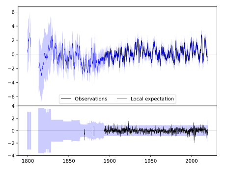
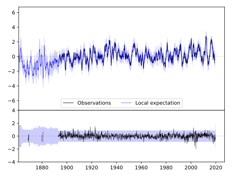
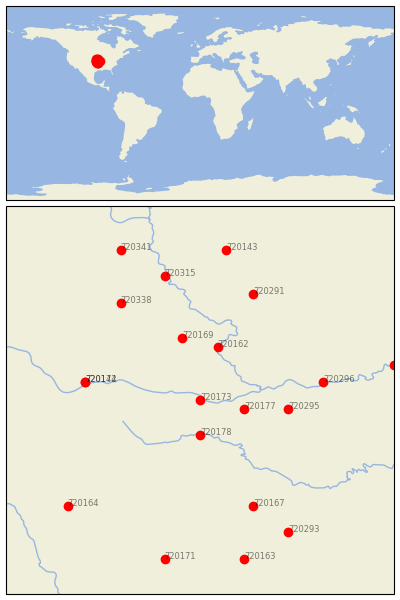

LAWRENCE [USA]


| Neighbour | Name | Country | Distance | Lon/Lat | Years |
|---|
| 720173 | LAWRENCE | USA | 0 | -95.3, 39.0 | 1868-2019 |
| 720178 | OTTAWA | USA | 44 | -95.3, 38.6 | 1893-2019 |
| 720177 | OLATHE 3E | USA | 44 | -94.8, 38.9 | 1864-2019 |
| 720162 | ATCHISON | USA | 68 | -95.1, 39.6 | 1865-2019 |
| 720169 | HORTON | USA | 79 | -95.5, 39.7 | 1888-2019 |
| 720295 | LEES SUMMIT REED WR | USA | 87 | -94.3, 38.9 | 1863-2019 |
| 720174 | MANHATTAN | USA | 114 | -96.6, 39.2 | 1891-2019 |
| 720142 | MANHATTAN D.Burnette | USA | 114 | -96.6, 39.2 | 1828-2019 |
| 720296 | LEXINGTON 3E | USA | 122 | -93.9, 39.2 | 1878-2019 |
| 720291 | CONCEPTION | USA | 143 | -94.7, 40.2 | 1888-2019 |
| 720167 | FT SCOTT | USA | 143 | -94.7, 37.8 | 1843-2019 |
| 720338 | PAWNEE CITY | USA | 144 | -96.2, 40.1 | 1882-2019 |
| 720315 | AUBURN 5 ESE | USA | 159 | -95.7, 40.4 | 1893-2019 |
| 720164 | EL DORADO | USA | 186 | -96.8, 37.8 | 1886-2019 |
| 720293 | LAMAR | USA | 188 | -94.3, 37.5 | 1885-2019 |
| 720143 | CLARINDA | USA | 190 | -95.0, 40.7 | 1872-2019 |
| 720289 | BRUNSWICK | USA | 194 | -93.1, 39.4 | 1889-2019 |
| 720171 | INDEPENDENCE | USA | 203 | -95.7, 37.2 | 1872-2019 |
| 720341 | SYRACUSE | USA | 204 | -96.2, 40.7 | 1871-2019 |
| 720163 | COLUMBUS | USA | 204 | -94.8, 37.2 | 1891-2019 |